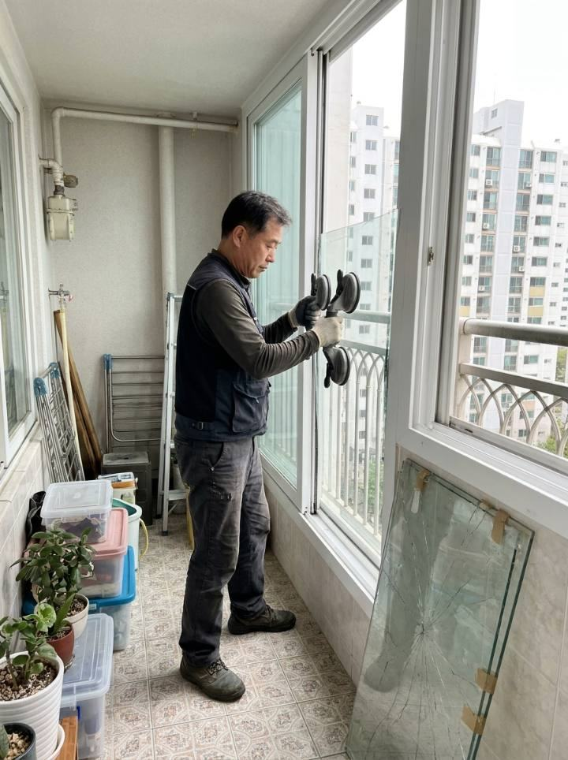

예시 사진- 24시밤·주말 출장
- 3곳가까운 동네 업체
- 0원연결 수수료
- 먼저출발 전 금액 안내
대구 수성구 연결 업체
어떤 상황인가요?
해당하는 걸 모두 고르면, 내용이 적힌 문자로 바로 연결돼요.
수성구에서는 이렇게 다릅니다
창문 유리가 깨졌거나, 샷시가 안 닫히거나, 방충망과 잠금장치가 고장 났을 때 유리·샷시 업체를 연결합니다. 수성구(범어·만촌·시지) 안에서 가까운 업체를 먼저 연결합니다.
수성구는 범어·만촌동 학군 아파트와 수성못 상권, 시지·욱수 택지가 있는 대구 대표 주거 지역입니다.
재건축 신축 고급 단지가 많아 빌트인 설비·시스템 에어컨 문의가 많고, 구축 단지는 배관 교체 문의가 있습니다.
신축 아파트는 시스템 창호와 복층 유리가 많아 같은 규격 유리를 주문 제작해야 하는 경우가 있습니다. 창호 회사와 모델을 알려주시면 빨라집니다.
상가 전면 유리와 강화유리 출입문은 크기가 커서 장비와 인원이 더 필요하고, 영업 때문에 임시 막음을 먼저 하는 경우가 많습니다.
생활권별로 보기
범어동(학원가·신축) 쪽 유리·창문 파손 출동은 신축은 설비 제조사 보증이 남아 있을 수 있어 보증서를 같이 찾아 두시면 좋습니다.
만촌동(아파트 단지) 쪽 유리·창문 파손 출동은 아파트 단지는 방문 차량 등록과 엘리베이터 사용을 관리사무소에 미리 알려 두면 작업이 빨라집니다.
수성못(상권·카페) 쪽 유리·창문 파손 출동은 영업 중인 가게는 손님 동선을 피해 작업해야 해서 출입구와 작업 공간을 미리 알려 주시면 좋습니다.
시지·욱수(택지 아파트) 쪽 유리·창문 파손 출동은 입주한 지 얼마 안 된 단지는 하자보수 기간인지 먼저 확인하면 비용을 아낄 수 있습니다.
- 범어동
- 학원가·신축
- 만촌동
- 아파트 단지
- 수성못
- 상권·카페
- 시지·욱수
- 택지 아파트
전화할 때 알려 주세요
- 증상과 언제부터 그랬는지, 가능하면 사진
- 아파트 단지명과 동·호수, 방문 차량 주차 등록 방법
- 상호와 영업 시간, 작업 가능한 시간대
- 방문 가능한 시간과 받을 연락처
태풍과 강풍이 부는 여름·가을에 유리 파손이 많고, 겨울에는 외풍 때문에 샷시 수리 문의가 늘어납니다.
이런 일이면 부르세요
- 유리 깨짐
- 샷시 안 닫힘
- 잠금장치 고장
- 방충망
- 외풍
- 현관 유리문
수성구 유리·창문 파손 비용
참고 범위예요. 업체가 출발하기 전에 전화로 예상 금액을 먼저 알려드립니다.
업체가 오기 전에
- 조각 치우기
큰 조각은 두꺼운 장갑을 끼고 치우고, 작은 조각은 테이프로 찍어 냅니다.
- 임시로 막기
비닐과 테이프로 막아 두면 바람과 비를 당분간 막을 수 있습니다.
- 창 크기 재기
유리 가로·세로와 두께를 알려주시면 맞는 유리를 가져갑니다.
깨진 유리가 창틀에 남아 있으면 떨어질 수 있으니 창 아래 통행을 막아 두세요.
자주 묻는 질문
당일 교체되나요?
일반 규격은 당일 가능한 경우가 많고, 복층·특수 유리는 제작 기간이 걸립니다.
샷시가 무거워 잘 안 열려요.
롤러가 닳은 경우가 많아 롤러 교체로 해결되는 일이 흔합니다.
아파트 관리사무소에 먼저 연락해야 하나요?
세대 안 고장은 바로 업체를 부르셔도 됩니다. 공용 배관이나 윗집·아랫집과 얽힌 문제는 관리사무소에도 같이 알려 두시면 처리가 빠릅니다. 하자보수 기간 안이라면 시공사 접수가 먼저일 수 있습니다.